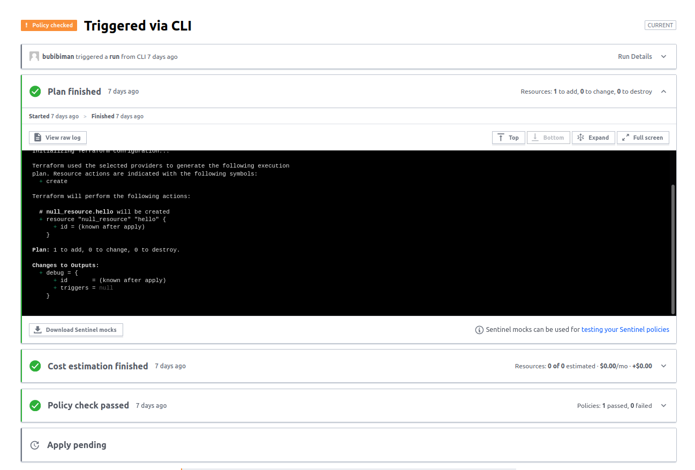

In this second post of the serie, I will describe the steps I have done to set up the test environment to test my Sentinel policy.
This serie is made of 3 posts:
THE TEST ENVIRONMENT
When we develop the policy it will be very difficult to push a configuration to see if the policy behaves like we want. Hashicorp provide a test environment to ease the development of the policies.
Test environment setup steps
Install sentinel policy CLI
Download the mock file that will feed our test environment :
Click on “Download Sentinel mocks”
Unzip the file.
We will have all the possible environments of a Terraform Enterprise/Cloud mocked in files. In our case, as we will only use the tfplan/v2, the only file that is relevant is mock-tfplan-v2.sentinelCreate test scenario.
The folder structure MUST be /test/<policy>/*.hcl.- test is the parent directory of the tests.
- <policy> must match the tested policy name.
- .hcl is the test scenario file.
- test is the parent directory of the tests.
Move the mocked data into the directory after the test file structure has been created. In our case we move the mock-tfplan-v2.sentinel file that we had unziped previously. The final directory and file structure should be like below.
{kind=link}
.
├── first_pol.sentinel
└── test
└── first_pol
├── mock-tfplan-v2.sentinel
└── mypasstest.hcl
Test file scenario
In the hcl test file, you will have 2 blocks.
- The mock block that refer to the file that cater the data for the test scenario.
- the test block that will represent the conditions to pass the test.
In our case it will be
mock "tfplan/v2" {
module {
source = "mock-tfplan-v2.sentinel"
}
}
test {
rules = {
main = true
}
}
The we can issue the command sentinel test to test our policy
$ sentinel test
PASS - first_pol.sentinel
PASS - test/first_pol/mypasstest.hcl
Fail test scenario
If we want to go a step further, in software world it’s a common practice to write failed test case scenario. It ensures your software is able to handle failure and that there are no regression when you iterate your code.
In such case, you also need to create a fail test scenario file such /test/<policy>/myfailtest.hcl with the failing condition and the mocked data with the data that will ensure the test will fail.
What can cause confusion is that this test case should PASS if your test FAIL because you are expecting it to fail.
The test plan will look like as below with the main rule equal to false
mock "tfplan/v2" {
module {
source = "mock-tfplan-v2-fail.sentinel"
}
}
test {
rules = {
main = false
}
}
Then we need to modify the mocked data to fail the policy and so PASS the test. For our example we change the value from ABC to DEF.
variables = {
"prefix": {
"name": "prefix",
"value": "DEF",
},
}
The file structure will look like below.
.
├── first_pol.sentinel
└── test
└── first_pol
├── mock-tfplan-v2-fail.sentinel
├── mock-tfplan-v2.sentinel
├── myfailtest.hcl
└── mypasstest.hcl
Finally we can test our policy again.
$ sentinel test
PASS - first_pol.sentinel
PASS - test/first_pol/myfailtest.hcl
PASS - test/first_pol/mypasstest.hcl